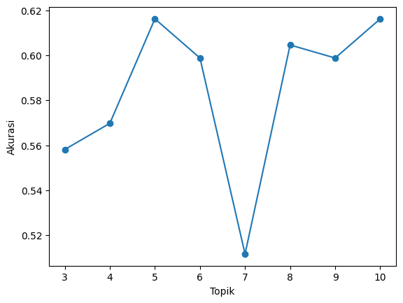

import pandas as pd
from sklearn.decomposition import LatentDirichletAllocation4 LDA Topic Modelling
data = pd.read_csv('/content/drive/MyDrive/ppw/ppw/crawling_pta_labeled.csv')
data| Judul | Penulis | Dosen Pembimbing I | Dosen Pembimbing II | Abstrak | Label | |
|---|---|---|---|---|---|---|
| 0 | PERANCANGAN DAN IMPLEMENTASI SISTEM DATABASE ... | A.Ubaidillah S.Kom | Budi Setyono M.T | Hermawan S.T | Sistem informasi akademik (SIAKAD) merupaka... | RPL |
| 1 | APLIKASI KONTROL DAN MONITORING JARINGAN KOMPU... | M. Basith Ardianto, | Drs. Budi Soesilo, MT | Koko Joni, ST | Berjalannya koneksi jaringan komputer dengan l... | RPL |
| 2 | RANCANG BANGUN APLIKASI PROXY SERVER UNTUK ENK... | Akhmad Suyandi, S.Kom | Drs. Budi Soesilo, M.T | Hermawan, ST, MT | Web server adalah sebuah perangkat lunak serve... | RPL |
| 3 | SISTEM PENDUKUNG KEPUTUSAN OPTIMASI PENJADWALA... | Heri Supriyanto | Mulaab, S.Si., M.Kom | Firli Irhamni, ST., M.Kom | Penjadwalan kuliah di Perguruan Tinggi me... | KK |
| 4 | SISTEM AUGMENTED REALITY ANIMASI BENDA BERGERA... | Septian Rahman Hakim | Arik Kurniawati, S.Kom., M.T. | Haryanto, S.T., M.T. | Seiring perkembangan teknologi yang ada diduni... | KK |
| ... | ... | ... | ... | ... | ... | ... |
| 853 | PENERAPAN ALGORITMA LONG-SHORT TERM MEMORY UNT... | Rachmad Agung Pambudi | Eka Mala Sari Rochman, S.Kom., M.Kom | Sri Herawati, S.Kom., M.Kom | Investasi saham selama ini memiliki resiko ker... | KK |
| 854 | SISTEM PENCARIAN TEKS AL-QURAN TERJEMAHAN BERB... | Nadila Hidayanti | Achmad Jauhari, S.T., M.Kom | Ika Oktavia Suzanti, S.Kom., M.Cs | Information Retrieval (IR) merupakan pengambil... | KK |
| 855 | KLASIFIKASI KOMPLEKSITAS VISUAL CITRA SAMPAH M... | Afni Sakinah | Dr. Indah Agustien Siradjuddin, S.Kom., M.Kom. | Moch. Kautsar Sophan, S.Kom., M.MT. | Klasifikasi citra merupakan proses pengelompok... | KK |
| 856 | IDENTIFIKASI BINER ATRIBUT PEJALAN KAKI MENGGU... | Friska Fatmawatiningrum | Dr. Indah Agustien Siradjuddin, S.Kom., M.Kom. | Prof. Dr. Arief Muntasa, S.Si., M.MT. | Identifikasi atribut pejalan kaki merupakan sa... | KK |
| 857 | DETEKSI OBJEK MANUSIA BERBASIS ONE STAGE DETEC... | Dian Wibowo | Dr. Indah Agustien Siradjuddin, S.Kom., M.Kom. | Moch. Kautsar Sophan, S.Kom., M.MT. | Topik deteksi objek telah menarik perhatian ya... | KK |
858 rows × 6 columns
TF = pd.read_csv("/content/drive/MyDrive/ppw/ppw/TF.csv")
TF| aalysis | aam | abad | abadi | ability | abjad | absensi | absolut | absolute | abstract | ... | zara | zat | zcz | zf | zona | zone | zoning | zoom | zucara | zungu | |
|---|---|---|---|---|---|---|---|---|---|---|---|---|---|---|---|---|---|---|---|---|---|
| 0 | 0 | 0 | 0 | 0 | 0 | 0 | 0 | 0 | 0 | 0 | ... | 0 | 0 | 0 | 0 | 0 | 0 | 0 | 0 | 0 | 0 |
| 1 | 0 | 0 | 0 | 0 | 0 | 0 | 0 | 0 | 0 | 0 | ... | 0 | 0 | 0 | 0 | 0 | 0 | 0 | 0 | 0 | 0 |
| 2 | 0 | 0 | 0 | 0 | 0 | 0 | 0 | 0 | 0 | 0 | ... | 0 | 0 | 0 | 0 | 0 | 0 | 0 | 0 | 0 | 0 |
| 3 | 0 | 0 | 0 | 0 | 0 | 0 | 0 | 0 | 0 | 0 | ... | 0 | 0 | 0 | 0 | 0 | 0 | 0 | 0 | 0 | 0 |
| 4 | 0 | 0 | 0 | 0 | 0 | 0 | 0 | 0 | 0 | 0 | ... | 0 | 0 | 0 | 0 | 0 | 0 | 0 | 0 | 0 | 0 |
| ... | ... | ... | ... | ... | ... | ... | ... | ... | ... | ... | ... | ... | ... | ... | ... | ... | ... | ... | ... | ... | ... |
| 853 | 0 | 0 | 0 | 0 | 0 | 0 | 0 | 0 | 0 | 0 | ... | 0 | 0 | 0 | 0 | 0 | 0 | 0 | 0 | 0 | 0 |
| 854 | 0 | 0 | 0 | 0 | 0 | 0 | 0 | 0 | 0 | 0 | ... | 0 | 0 | 0 | 0 | 0 | 0 | 0 | 0 | 0 | 0 |
| 855 | 0 | 0 | 0 | 0 | 0 | 0 | 0 | 0 | 0 | 0 | ... | 0 | 0 | 0 | 0 | 0 | 0 | 0 | 0 | 0 | 0 |
| 856 | 0 | 0 | 0 | 0 | 0 | 0 | 0 | 0 | 0 | 0 | ... | 0 | 0 | 0 | 0 | 0 | 0 | 0 | 0 | 0 | 0 |
| 857 | 0 | 0 | 0 | 0 | 0 | 0 | 0 | 0 | 0 | 0 | ... | 0 | 0 | 0 | 0 | 0 | 0 | 0 | 0 | 0 | 0 |
858 rows × 8463 columns
4.1 3 topik
lda_3 = LatentDirichletAllocation(n_components=3, doc_topic_prior=0.2, topic_word_prior=0.1,random_state=42,max_iter=1)
lda_top_3=lda_3.fit_transform(TF)# print(lda_top_3.shape) # (no_of_doc,no_of_topics)
# print(lda_top_3)#bobot setiap topik terhadap dokumen
u = pd.DataFrame(lda_top_3, columns=['Topik 1','Topik 2','Topik 3'])
u['Label']=data['Label'].values
u| Topik 1 | Topik 2 | Topik 3 | Label | |
|---|---|---|---|---|
| 0 | 0.995108 | 0.002436 | 0.002456 | RPL |
| 1 | 0.001915 | 0.001910 | 0.996175 | RPL |
| 2 | 0.001828 | 0.996359 | 0.001812 | RPL |
| 3 | 0.003014 | 0.993977 | 0.003009 | KK |
| 4 | 0.002377 | 0.281489 | 0.716134 | KK |
| ... | ... | ... | ... | ... |
| 853 | 0.588695 | 0.409574 | 0.001732 | KK |
| 854 | 0.606649 | 0.390935 | 0.002416 | KK |
| 855 | 0.141902 | 0.856795 | 0.001303 | KK |
| 856 | 0.269308 | 0.729113 | 0.001579 | KK |
| 857 | 0.995425 | 0.002301 | 0.002274 | KK |
858 rows × 4 columns
print(lda_3.components_)
# print(lda.components_.shape) # (no_of_topics*no_of_words)[[1.09986372 0.29416288 0.26510778 ... 0.10018866 0.7013374 0.59065163]
[0.10007445 1.90574925 0.7452148 ... 3.09963569 0.49861018 0.60930005]
[0.10006182 0.10008788 1.28967742 ... 0.10017565 0.10005241 0.10004833]]#bobot setiap kata terhadap topik
label=[]
for i in range (1,(lda_3.components_.shape[1]+1)):
masukan = TF.columns[i-1]
label.append(masukan)
VT_tabel = pd.DataFrame(lda_3.components_,columns=label)
VT_tabel.rename(index={0:"Topik 1",1:"Topik 2",2:"Topik 3"}).transpose()| Topik 1 | Topik 2 | Topik 3 | |
|---|---|---|---|
| aalysis | 1.099864 | 0.100074 | 0.100062 |
| aam | 0.294163 | 1.905749 | 0.100088 |
| abad | 0.265108 | 0.745215 | 1.289677 |
| abadi | 2.094167 | 0.105741 | 0.100091 |
| ability | 0.132497 | 1.067448 | 0.100055 |
| ... | ... | ... | ... |
| zone | 1.188683 | 2.011142 | 0.100175 |
| zoning | 1.744798 | 2.455024 | 0.100179 |
| zoom | 0.100189 | 3.099636 | 0.100176 |
| zucara | 0.701337 | 0.498610 | 0.100052 |
| zungu | 0.590652 | 0.609300 | 0.100048 |
8463 rows × 3 columns
4.2 4 Topik
lda_4 = LatentDirichletAllocation(n_components=4, doc_topic_prior=0.2, topic_word_prior=0.1,random_state=42,max_iter=1)
lda_top_4=lda_4.fit_transform(TF)# print(lda_top_4.shape) # (no_of_doc,no_of_topics)
# print(lda_top_4)#bobot setiap topik terhadap dokumen
v = pd.DataFrame(lda_top_4, columns=['Topik 1','Topik 2','Topik 3', 'Topik 4'])
v['Label']=data['Label'].values
v| Topik 1 | Topik 2 | Topik 3 | Topik 4 | Label | |
|---|---|---|---|---|---|
| 0 | 0.992696 | 0.002427 | 0.002445 | 0.002433 | RPL |
| 1 | 0.001910 | 0.001906 | 0.994278 | 0.001906 | RPL |
| 2 | 0.001819 | 0.001829 | 0.001806 | 0.994545 | RPL |
| 3 | 0.003004 | 0.990994 | 0.003003 | 0.002999 | KK |
| 4 | 0.002371 | 0.186052 | 0.809207 | 0.002370 | KK |
| ... | ... | ... | ... | ... | ... |
| 853 | 0.599243 | 0.397287 | 0.001732 | 0.001738 | KK |
| 854 | 0.384991 | 0.002423 | 0.002411 | 0.610175 | KK |
| 855 | 0.129806 | 0.867588 | 0.001301 | 0.001305 | KK |
| 856 | 0.321230 | 0.675617 | 0.001575 | 0.001578 | KK |
| 857 | 0.993176 | 0.002289 | 0.002266 | 0.002268 | KK |
858 rows × 5 columns
# print(lda_4.components_)
# print(lda_4.components_.shape) # (no_of_topics*no_of_words)#bobot setiap kata terhadap topik
label=[]
for i in range (1,(lda_4.components_.shape[1]+1)):
masukan = TF.columns[i-1]
label.append(masukan)
VT_tabel_4 = pd.DataFrame(lda_4.components_,columns=label)
VT_tabel_4.rename(index={0:"Topik 1",1:"Topik 2",2:"Topik 3",3:"Topik 4"}).transpose()| Topik 1 | Topik 2 | Topik 3 | Topik 4 | |
|---|---|---|---|---|
| aalysis | 1.099786 | 0.100074 | 0.100062 | 0.100077 |
| aam | 0.135256 | 0.925725 | 0.100106 | 1.238913 |
| abad | 0.188448 | 0.743696 | 1.272567 | 0.195289 |
| abadi | 0.947367 | 0.100081 | 0.100085 | 1.252467 |
| ability | 0.101482 | 0.908897 | 0.100052 | 0.289569 |
| ... | ... | ... | ... | ... |
| zone | 1.141411 | 2.040613 | 0.100175 | 0.117801 |
| zoning | 1.674040 | 2.492345 | 0.100179 | 0.133437 |
| zoom | 0.100188 | 3.099448 | 0.100176 | 0.100188 |
| zucara | 0.744967 | 0.454929 | 0.100052 | 0.100052 |
| zungu | 0.637082 | 0.562822 | 0.100049 | 0.100048 |
8463 rows × 4 columns
4.3 5 Topik
lda_5 = LatentDirichletAllocation(n_components=5, doc_topic_prior=0.2, topic_word_prior=0.1,random_state=42,max_iter=1)
lda_top_5=lda_5.fit_transform(TF)# print(lda_top_5.shape) # (no_of_doc,no_of_topics)
# print(lda_top_5)#bobot setiap topik terhadap dokumen
w = pd.DataFrame(lda_top_5, columns=['Topik 1','Topik 2','Topik 3', 'Topik 4', 'Topik 5'])
w['Label']=data['Label'].values
w| Topik 1 | Topik 2 | Topik 3 | Topik 4 | Topik 5 | Label | |
|---|---|---|---|---|---|---|
| 0 | 0.654117 | 0.002417 | 0.002428 | 0.002419 | 0.338619 | RPL |
| 1 | 0.001909 | 0.001907 | 0.992335 | 0.001917 | 0.001931 | RPL |
| 2 | 0.001813 | 0.001816 | 0.001801 | 0.992764 | 0.001806 | RPL |
| 3 | 0.002996 | 0.988001 | 0.002990 | 0.002988 | 0.003025 | KK |
| 4 | 0.002360 | 0.002395 | 0.002358 | 0.002356 | 0.990531 | KK |
| ... | ... | ... | ... | ... | ... | ... |
| 853 | 0.001750 | 0.001741 | 0.001723 | 0.001716 | 0.993071 | KK |
| 854 | 0.002407 | 0.002410 | 0.002386 | 0.002424 | 0.990373 | KK |
| 855 | 0.001302 | 0.001298 | 0.001289 | 0.001294 | 0.994816 | KK |
| 856 | 0.001594 | 0.001578 | 0.001565 | 0.001569 | 0.993695 | KK |
| 857 | 0.002280 | 0.165768 | 0.002259 | 0.002263 | 0.827431 | KK |
858 rows × 6 columns
print(lda_5.components_)
print(lda_5.components_.shape) # (no_of_topics*no_of_words)[[0.63963351 0.10010684 0.10007511 ... 0.10017989 0.58415747 0.47942155]
[0.10008079 0.54242706 0.41372158 ... 2.34332563 0.45783258 0.53912235]
[0.10006688 0.10010583 0.45678326 ... 0.10016782 0.10005456 0.10004832]
[0.10008382 0.81685193 0.10010533 ... 0.10017946 0.10005518 0.1000477 ]
[0.560135 0.94050834 1.42931473 ... 0.8561472 0.25790022 0.28136009]]
(5, 8463)#bobot setiap kata terhadap topik
label=[]
for i in range (1,(lda_5.components_.shape[1]+1)):
masukan = TF.columns[i-1]
label.append(masukan)
VT_tabel_5 = pd.DataFrame(lda_5.components_,columns=label)
VT_tabel_5.rename(index={0:"Topik 1",1:"Topik 2",2:"Topik 3",3:"Topik 4",4:"Topik 5"}).transpose()| Topik 1 | Topik 2 | Topik 3 | Topik 4 | Topik 5 | |
|---|---|---|---|---|---|
| aalysis | 0.639634 | 0.100081 | 0.100067 | 0.100084 | 0.560135 |
| aam | 0.100107 | 0.542427 | 0.100106 | 0.816852 | 0.940508 |
| abad | 0.100075 | 0.413722 | 0.456783 | 0.100105 | 1.429315 |
| abadi | 0.702978 | 0.100084 | 0.100088 | 0.867786 | 0.729064 |
| ability | 0.100083 | 0.339592 | 0.100052 | 0.100086 | 0.860187 |
| ... | ... | ... | ... | ... | ... |
| zone | 0.981482 | 1.696751 | 0.100175 | 0.100127 | 0.621464 |
| zoning | 1.386911 | 2.001357 | 0.100173 | 0.100231 | 0.911327 |
| zoom | 0.100180 | 2.343326 | 0.100168 | 0.100179 | 0.856147 |
| zucara | 0.584157 | 0.457833 | 0.100055 | 0.100055 | 0.257900 |
| zungu | 0.479422 | 0.539122 | 0.100048 | 0.100048 | 0.281360 |
8463 rows × 5 columns
4.4 Naive Bayes
from sklearn.model_selection import train_test_split
from sklearn.naive_bayes import GaussianNB
import matplotlib.pyplot as plt4.5 3 Topik
X_1 = u.drop(columns="Label")
y_1 = u.LabelX_train_1,X_test_1,y_train_1,y_test_1 = train_test_split(X_1,y_1,test_size=0.2,random_state=42)NB = GaussianNB()
gaus=NB.fit(X_train_1, y_train_1)y_pred = gaus.predict(X_test_1)
y_predarray(['KK', 'KK', 'KK', 'RPL', 'RPL', 'KK', 'KK', 'RPL', 'KK', 'KK',
'KK', 'RPL', 'RPL', 'RPL', 'KK', 'RPL', 'RPL', 'KK', 'KK', 'KK',
'RPL', 'KK', 'KK', 'RPL', 'KK', 'KK', 'KK', 'KK', 'KK', 'KK', 'KK',
'RPL', 'KK', 'KK', 'KK', 'KK', 'RPL', 'KK', 'RPL', 'RPL', 'KK',
'KK', 'KK', 'KK', 'KK', 'KK', 'KK', 'KK', 'KK', 'KK', 'KK', 'KK',
'KK', 'KK', 'KK', 'RPL', 'KK', 'KK', 'KK', 'KK', 'KK', 'RPL', 'KK',
'RPL', 'KK', 'KK', 'KK', 'RPL', 'KK', 'KK', 'KK', 'KK', 'KK', 'KK',
'KK', 'RPL', 'KK', 'KK', 'KK', 'KK', 'KK', 'KK', 'KK', 'KK', 'KK',
'RPL', 'KK', 'KK', 'RPL', 'KK', 'KK', 'KK', 'KK', 'KK', 'KK',
'RPL', 'KK', 'KK', 'KK', 'KK', 'RPL', 'KK', 'KK', 'KK', 'RPL',
'RPL', 'RPL', 'KK', 'KK', 'KK', 'RPL', 'KK', 'RPL', 'KK', 'KK',
'RPL', 'KK', 'KK', 'KK', 'KK', 'KK', 'RPL', 'KK', 'KK', 'KK', 'KK',
'KK', 'RPL', 'RPL', 'KK', 'KK', 'KK', 'KK', 'KK', 'RPL', 'RPL',
'KK', 'RPL', 'KK', 'KK', 'RPL', 'KK', 'KK', 'KK', 'KK', 'KK', 'KK',
'KK', 'KK', 'KK', 'KK', 'KK', 'KK', 'RPL', 'KK', 'KK', 'KK', 'KK',
'RPL', 'RPL', 'KK', 'KK', 'KK', 'KK', 'KK', 'KK', 'RPL', 'KK',
'RPL', 'KK', 'KK', 'KK'], dtype='<U3')akurasi_train_1 = gaus.score(X_train_1, y_train_1)
akurasi_test_1 = gaus.score(X_test_1, y_test_1)
print(akurasi_train_1)
print(akurasi_test_1)0.6166180758017493
0.55813953488372094.6 4 Topik
X_2 = v.drop(columns="Label")
y_2 = v.LabelX_train_2,X_test_2,y_train_2,y_test_2 = train_test_split(X_2,y_2,test_size=0.2,random_state=42)NB = GaussianNB()
gaus=NB.fit(X_train_2, y_train_2)y_pred = gaus.predict(X_test_2)
y_predarray(['KK', 'KK', 'KK', 'RPL', 'RPL', 'RPL', 'KK', 'KK', 'KK', 'KK',
'KK', 'RPL', 'RPL', 'RPL', 'KK', 'RPL', 'RPL', 'KK', 'KK', 'KK',
'RPL', 'KK', 'KK', 'RPL', 'KK', 'KK', 'KK', 'KK', 'KK', 'KK',
'RPL', 'KK', 'KK', 'KK', 'KK', 'KK', 'RPL', 'KK', 'RPL', 'RPL',
'RPL', 'KK', 'KK', 'KK', 'RPL', 'KK', 'KK', 'RPL', 'KK', 'KK',
'KK', 'RPL', 'KK', 'KK', 'KK', 'KK', 'KK', 'KK', 'KK', 'KK', 'KK',
'RPL', 'KK', 'KK', 'RPL', 'KK', 'KK', 'RPL', 'RPL', 'KK', 'KK',
'KK', 'RPL', 'KK', 'RPL', 'KK', 'KK', 'KK', 'KK', 'KK', 'KK', 'KK',
'KK', 'KK', 'KK', 'KK', 'KK', 'KK', 'KK', 'RPL', 'KK', 'KK', 'KK',
'KK', 'KK', 'RPL', 'KK', 'KK', 'KK', 'KK', 'RPL', 'KK', 'RPL',
'KK', 'RPL', 'RPL', 'RPL', 'KK', 'KK', 'KK', 'RPL', 'KK', 'RPL',
'KK', 'KK', 'RPL', 'KK', 'KK', 'KK', 'KK', 'KK', 'RPL', 'RPL',
'KK', 'RPL', 'KK', 'KK', 'RPL', 'KK', 'KK', 'RPL', 'KK', 'KK',
'KK', 'RPL', 'KK', 'RPL', 'RPL', 'KK', 'RPL', 'RPL', 'KK', 'RPL',
'KK', 'KK', 'KK', 'KK', 'KK', 'KK', 'KK', 'KK', 'RPL', 'KK', 'KK',
'KK', 'RPL', 'KK', 'KK', 'RPL', 'RPL', 'RPL', 'KK', 'KK', 'KK',
'KK', 'KK', 'RPL', 'KK', 'RPL', 'RPL', 'KK', 'KK'], dtype='<U3')akurasi_train_2 = gaus.score(X_train_2, y_train_2)
akurasi_test_2 = gaus.score(X_test_2, y_test_2)
print(akurasi_train_2)
print(akurasi_test_2)0.5918367346938775
0.56976744186046514.7 5 Topik
X_3 = u.drop(columns="Label")
y_3 = u.LabelX_train_3,X_test_3,y_train_3,y_test_3 = train_test_split(X_3,y_3,test_size=0.2,random_state=42)NB = GaussianNB()
gaus=NB.fit(X_train_3, y_train_3)y_pred = gaus.predict(X_test_3)
y_predarray(['KK', 'KK', 'KK', 'RPL', 'RPL', 'KK', 'KK', 'RPL', 'KK', 'KK',
'KK', 'RPL', 'RPL', 'RPL', 'KK', 'RPL', 'RPL', 'KK', 'KK', 'KK',
'RPL', 'KK', 'KK', 'RPL', 'KK', 'KK', 'KK', 'KK', 'KK', 'KK', 'KK',
'RPL', 'KK', 'KK', 'KK', 'KK', 'RPL', 'KK', 'RPL', 'RPL', 'KK',
'KK', 'KK', 'KK', 'KK', 'KK', 'KK', 'KK', 'KK', 'KK', 'KK', 'KK',
'KK', 'KK', 'KK', 'RPL', 'KK', 'KK', 'KK', 'KK', 'KK', 'RPL', 'KK',
'RPL', 'KK', 'KK', 'KK', 'RPL', 'KK', 'KK', 'KK', 'KK', 'KK', 'KK',
'KK', 'RPL', 'KK', 'KK', 'KK', 'KK', 'KK', 'KK', 'KK', 'KK', 'KK',
'RPL', 'KK', 'KK', 'RPL', 'KK', 'KK', 'KK', 'KK', 'KK', 'KK',
'RPL', 'KK', 'KK', 'KK', 'KK', 'RPL', 'KK', 'KK', 'KK', 'RPL',
'RPL', 'RPL', 'KK', 'KK', 'KK', 'RPL', 'KK', 'RPL', 'KK', 'KK',
'RPL', 'KK', 'KK', 'KK', 'KK', 'KK', 'RPL', 'KK', 'KK', 'KK', 'KK',
'KK', 'RPL', 'RPL', 'KK', 'KK', 'KK', 'KK', 'KK', 'RPL', 'RPL',
'KK', 'RPL', 'KK', 'KK', 'RPL', 'KK', 'KK', 'KK', 'KK', 'KK', 'KK',
'KK', 'KK', 'KK', 'KK', 'KK', 'KK', 'RPL', 'KK', 'KK', 'KK', 'KK',
'RPL', 'RPL', 'KK', 'KK', 'KK', 'KK', 'KK', 'KK', 'RPL', 'KK',
'RPL', 'KK', 'KK', 'KK'], dtype='<U3')akurasi_train_3 = gaus.score(X_train_3, y_train_3)
akurasi_test_3 = gaus.score(X_test_3, y_test_3)
print("Hasil Akurasi Data Testing Menggunakan Naive Bayes sebesar : ", (100 * akurasi_train_3))
print("Hasil Akurasi Data Testing Menggunakan Naive Bayes sebesar : ", (100 * akurasi_test_3))Hasil Akurasi Data Testing Menggunakan Naive Bayes sebesar : 61.66180758017493
Hasil Akurasi Data Testing Menggunakan Naive Bayes sebesar : 55.81395348837209##K-NN & Decision Tree
from sklearn.neighbors import KNeighborsClassifier
from sklearn import treemetode_KNN = KNeighborsClassifier(n_neighbors=3)
metode_KNN.fit(X_train_3, y_train_3)KNeighborsClassifier(n_neighbors=3)In a Jupyter environment, please rerun this cell to show the HTML representation or trust the notebook.
On GitHub, the HTML representation is unable to render, please try loading this page with nbviewer.org.
KNeighborsClassifier(n_neighbors=3)
print("Hasil Akurasi Data Training Menggunakan KNN sebesar : ", (100 * metode_KNN.score(X_train_3, y_train_3)))
print("Hasil Akurasi Data Testing Menggunakan KNN sebesar : ", (100 * (metode_KNN.score(X_test_3, y_test_3))))Hasil Akurasi Data Training Menggunakan KNN sebesar : 78.134110787172
Hasil Akurasi Data Testing Menggunakan KNN sebesar : 54.65116279069767metode_DT = tree.DecisionTreeClassifier(criterion="gini")
metode_DT.fit(X_train_3, y_train_3)DecisionTreeClassifier()In a Jupyter environment, please rerun this cell to show the HTML representation or trust the notebook.
On GitHub, the HTML representation is unable to render, please try loading this page with nbviewer.org.
DecisionTreeClassifier()
print("Hasil Akurasi Data Training Menggunakan Decision Tree sebesar : ", (100 * metode_DT.score(X_train_3, y_train_3)))
print("Hasil Akurasi Data Testing Menggunakan Decision Tree sebesar : ", (100 * (metode_DT.score(X_test_3, y_test_3))))Hasil Akurasi Data Training Menggunakan Decision Tree sebesar : 98.54227405247813
Hasil Akurasi Data Testing Menggunakan Decision Tree sebesar : 52.906976744186054.8 Perulangan LDA topik 3-10
data_LDA=[]
for i in range (3,11):
lda = LatentDirichletAllocation(n_components=i, doc_topic_prior=0.2, topic_word_prior=0.1,random_state=42,max_iter=1)
lda_top=lda.fit_transform(TF)
data_LDA.append(lda_top)akurasi=[]
for i in range(8):
y = data.Label
X_train,X_test,y_train,y_test = train_test_split(data_LDA[i],y,test_size=0.2,random_state=42)
NB = GaussianNB()
gaus=NB.fit(X_train, y_train)
nb_akurasi=gaus.score(X_test, y_test)
akurasi.append(nb_akurasi)akurasi[0.5581395348837209,
0.5697674418604651,
0.6162790697674418,
0.5988372093023255,
0.5116279069767442,
0.6046511627906976,
0.5988372093023255,
0.6162790697674418]import matplotlib.pyplot as plt
# Data
x = []
for i in range(3,11):
x.append(i)
y = akurasi
# Create a line chart
plt.plot(x, y, marker='o', linestyle='-') # 'o' for markers, '-' for solid line
# Add a title and axis labels
plt.xlabel('Topik')
plt.ylabel('Akurasi')
# Show the plot
plt.show()